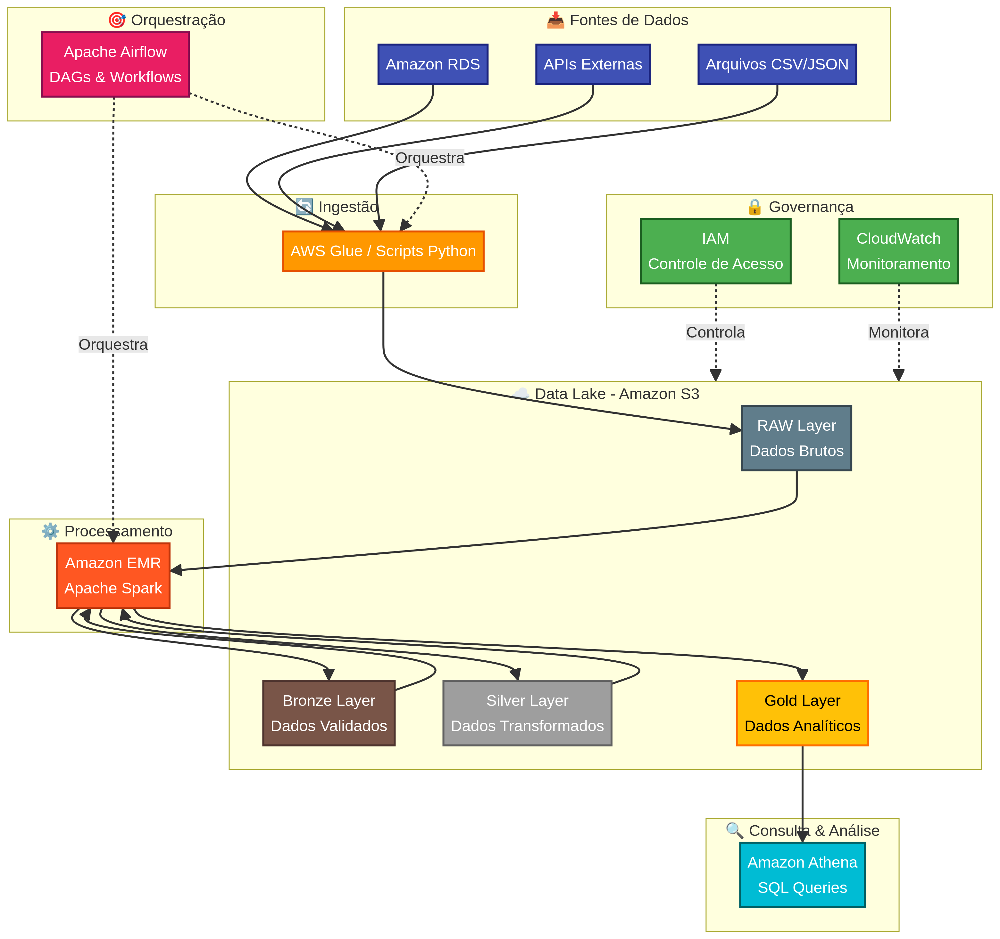

Democratizar dados significa dar a cada área da empresa acesso confiável à informação certa, no formato certo, no tempo certo. Este projeto desenhou uma arquitetura de Data Lake completa para uma operação de cobranças.
O Problema de Negócio
A operação de cobrança de inadimplentes dependia de extrações manuais do banco transacional, feitas por um DBA sobrecarregado. O time comercial esperava dias para receber um relatório. Decisões atrasavam. Dinheiro ficava na mesa.
Arquitetura em 4 Camadas

Implementei a arquitetura Medallion (Bronze/Silver/Gold) com uma camada adicional RAW:
- RAW: Dados brutos exatamente como chegam — backups imutáveis no
S3 - Bronze: Dados ingeridos com schema básico aplicado, particionados por data de ingestão
- Silver: Dados limpos, deduplicados e normalizados com
Apache SparknoEMR - Gold: Modelos analíticos prontos para consumo — tabelas agregadas, KPIs, views materializadas
Orquestração e Governança
O Apache Airflow orquestra todo o fluxo de dados entre camadas. Cada DAG tem:
- Validações de qualidade entre cada transição de camada
- Políticas de retenção por camada (RAW: indefinido, Bronze: 90 dias, etc.)
- Controle de acesso via
IAM— cada área vê apenas os dados que precisa - Monitoramento via
CloudWatchcom alertas de SLA
Impacto
Com o Data Lake operacional, o time de cobranças passou a ter dashboards atualizados diariamente, com segmentação por perfil de inadimplente, priorização automática de carteiras e análise de aging.
- Tempo de acesso a dados: de dias para minutos
- Banco transacional desafogado (zero queries analíticas no OLTP)
- Dados consultáveis via
Athenapor qualquer analista com SQL - Governança centralizada com auditoria de acessos
Um Data Lake sem governança é um Data Swamp. Camadas, validações e controle de acesso fazem a diferença.
Tecnologias Utilizadas
- AWS S3, RDS, EMR, Athena, CloudWatch, IAM
- Apache Spark (processamento distribuído)
- Apache Airflow (orquestração)
- Parquet (formato colunar otimizado)